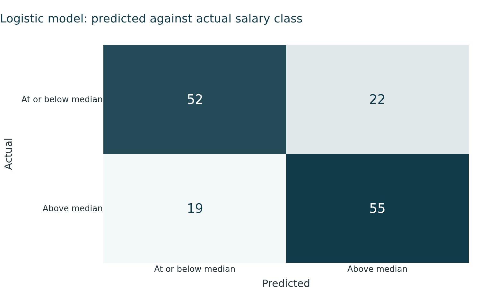
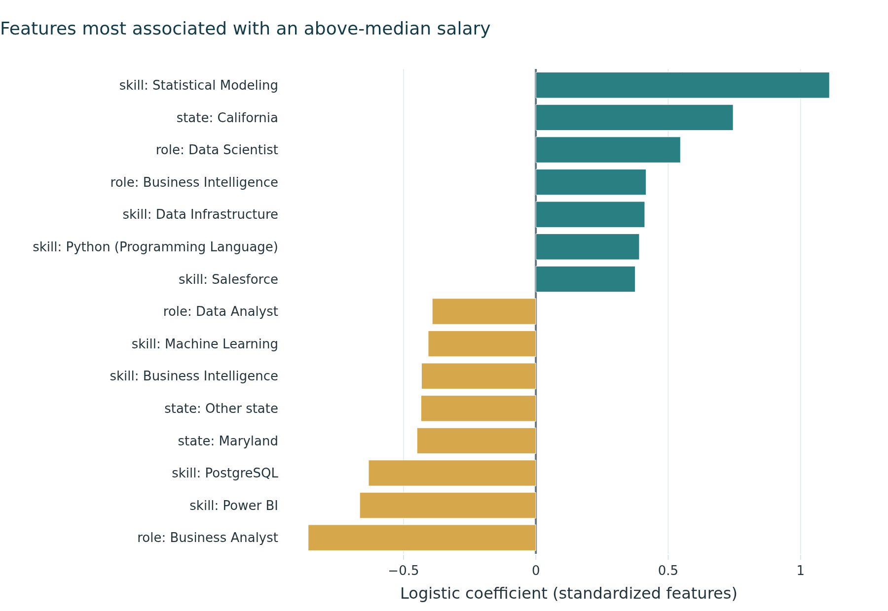

Which Postings Pay Above the Median, and What Separates Them
Purpose
The earlier pages describe the market. This page moves from describing it to predicting it. The question is whether the information a posting makes public, its role, location, work arrangement, education level and listed skills, is enough to tell whether that posting pays above or below the market median.
What We Modeled
We built a binary classifier. The target is whether a posting’s advertised salary midpoint sits above the median of all postings that report usable pay, which is $151,475.
Splitting at the median rather than at a round number keeps the two classes almost the same size, 295 postings above and 296 at or below. That matters for reading the results. A model that guessed the larger class every time would score about 50 percent, so anything above that is real signal rather than an artifact of unbalanced classes.
NoteWhy classification rather than salary regression
Predicting an exact salary from 591 postings would produce wide error bands that are hard to act on. A job seeker deciding whether to pursue a posting benefits more from a reliable above or below signal, together with the factors driving it, than from a point estimate carrying a $40,000 margin.
Why This Matters for a Job Seeker
The Skill Gap Analysis page shows which skills appear most often in postings, following the posting-level counting approach used in content analyses of analytics job advertisements (Verma et al. (2019)). Frequency alone does not tell a job seeker where to spend study time, because a skill can be requested constantly and still be present in roles across the whole pay range. What this page adds is the direction and size of each factor’s association with pay, which turns a list of in-demand skills into a ranked set of choices.
Variables Used
The model uses 55 features built from 591 postings:
Block
Treatment
Levels
Role family
One-hot
5
Work arrangement
One-hot, Unknown kept as a category
4
State
Six most frequent states, plus Unspecified and Other
8
Education level
One-hot, missing kept as a category
6
Listed skills
Binary indicator per skill on at least 5 percent of postings
32
Three fields were deliberately left out. Minimum years of experience is recorded on only 154 of these postings, so including it as a numeric variable would have meant discarding about three quarters of the sample. The staffing agency flag has 13 positive cases, too few to estimate. Occupation group was dropped because it is derived from the job title in the same way as role family and the two would carry the same information twice.
Work arrangement and state both keep their missing categories rather than dropping those rows. Work arrangement is unknown for 278 of these postings and state is unspecified for 164, so dropping them would have cost roughly half the sample. Treating missing as its own category is also honest about the data: whether an employer publishes this information may itself carry signal.
How We Evaluated Performance
The sample was split 75 / 25 into 443 training and 148 test postings, stratified so both halves keep the same class balance. Models were compared by five-fold cross-validation inside the training set. The test set was scored once, at the end, after the choice of model was already fixed.
This sequence matters at this sample size. With 591 rows it is easy to adjust a model repeatedly against the test set and report a number that will not survive new data.
Four specifications were fitted, two of them as reference points rather than as candidates:
Majority-class baseline. Predicts the larger class every time. Sets the floor.
Logistic regression on role family only. Tests whether anything beyond the job title helps.
Logistic regression on all features. L2 regularized, features standardized.
Random forest on all features. 500 trees, minimum three samples per leaf.
Table 1: Model performance. Cross-validation accuracy is measured inside the training set; test figures come from the single held-out evaluation.
Model
Features
CV accuracy
CV sd
Test accuracy
Precision
Recall
F1
0
Majority-class baseline
55
0.5011
0.0042
0.5000
0.0000
0.0000
0.0000
1
Logistic, role family only
5
0.6883
0.0339
0.5946
0.5603
0.8784
0.6842
2
Logistic, all features
55
0.7336
0.0340
0.7230
0.7143
0.7432
0.7285
3
Random forest, all features
55
0.8171
0.0372
0.7838
0.7763
0.7973
0.7867
Results
The baseline lands on 50.0%, which confirms the balanced design. Role family alone reaches 59.5% on the test set. Adding location, education, work arrangement and skills lifts the logistic model to 72.3%, and the random forest reaches 78.4%.
The gap between role-family-only and the full feature set is the result that matters most for this product. Job title alone is a weak predictor of pay. The rest of what a posting makes public carries a substantial amount of additional information.

Figure 1: Predicted against actual salary class for the logistic model.
WarningHow precisely to read these numbers
The test set holds 148 postings, so accuracy carries a standard error near four percentage points. Differences of two or three points between models should not be treated as meaningful. The forest’s advantage over the logistic model is larger than that, but the ranking of two closely spaced models could change on a different split.
The role-family-only specification shows 68.8% in cross-validation against 59.5% on test. That gap is about two standard errors and is most likely sampling variation, but it is a reason not to build an argument on that row alone.
What Separates Higher-Paying Postings
The logistic model is reported alongside the forest because its coefficients are readable. Each one is the change in log-odds of an above-median salary for a one standard deviation change in that feature, holding the others fixed. Positive values push toward above-median pay and negative values away from it.

Figure 2: Features most strongly associated with an above-median salary.
Table 2: Ten strongest features by absolute logistic coefficient, with the random forest’s importance for the same feature.
Feature
Logistic coefficient
Forest importance
0
skill: Statistical Modeling
1.109191
0.024191
1
role: Business Analyst
-0.860149
0.056789
2
state: California
0.745376
0.104603
3
skill: Power BI
-0.665396
0.019781
4
skill: PostgreSQL
-0.632117
0.014308
5
role: Data Scientist
0.546338
0.064809
6
state: Maryland
-0.449149
0.009304
7
state: Other state
-0.433772
0.052921
8
skill: Business Intelligence
-0.431863
0.003800
9
role: Business Intelligence
0.416418
0.004479
The two models do not agree on what matters, and the disagreement is informative. The forest places its weight on state and role family, which are broad structural factors. The logistic model gives its largest coefficients to individual skills. A reasonable reading is that structure sets the general pay level while specific skills shift a posting within it.
ImportantA finding worth stating plainly
Three of the strongest skill coefficients cut against the assumption that the most requested skills are the best paid. Checked against raw medians inside this sample:
Skill
Postings
Median with
Median without
Difference
Statistical Modeling
33
$211,200
$148,100
+$63,100
Power BI
59
$122,500
$155,725
-$33,225
PostgreSQL
42
$123,760
$155,000
-$31,240
Power BI is not standing in for business analyst roles. Business Analyst makes up 14 percent of Power BI postings against 15 percent of the sample overall, so the negative coefficient is not absorbing a role effect.
Revisiting Our Own Skill Targets
This result is uncomfortable for the plan on the Skill Gap Analysis page. Section 4 sets a target level for every skill from how often it appears in postings, so a skill in 20 percent or more gets a target of 4 and anything below 10 percent gets a 2. That rule treats frequency as a proxy for value. The model says the two come apart.
Statistical Modeling appears in 6.4 percent of postings, which puts it near the bottom of our target list, and it carries the largest positive coefficient in the model. Power BI sits higher on frequency at 11.2 percent and is associated with pay roughly $33,000 below the rest of the sample. A plan built on counts alone would have us study the second and skip the first.
For my own ratings the gap is direct. I rated myself 5 on Power BI and 2 on Statistical Modeling, which is close to the inverse of what this slice of the market pays for.
I would keep frequency as the measure of how likely a skill is to get an interview, and add the pay association as a separate measure of where that skill leads. The two answer different questions, and the plan as written only asks one of them.
What This Means in Practical Career Terms
For a student targeting analytics roles in this industry, three things follow from the model.
Job title is a weak signal. Role family alone classified pay no better than 59.5%. Searching by title, or assuming one title pays better than another, leaves out most of what the market is actually pricing.
Location remains a strong structural factor. California carries the largest positive coefficient of any non-skill feature, and the highest forest importance of any feature in the model. For a candidate who cannot relocate, this is a constraint worth naming rather than a skill to acquire.
Not all in-demand skills are priced alike. The skills that appear most often in postings are not the skills most associated with higher pay. A study plan built only on frequency counts will point at the wrong things.
Limitations
Salary is advertised on 591 of 1790 postings, or about 33 percent. Everything here describes employers who publish pay, which may not resemble those who do not.
The skill findings rest on small subgroups. Statistical Modeling appears on 33 postings and Power BI on 59, so those estimates are imprecise.
These are associations within one industry over one twelve-month window. Nothing here establishes that acquiring a skill would change an individual’s pay.
Skills are recorded as a list per posting with no indication of whether a skill is required or merely preferred.
The two models disagree on feature ranking, so the ordering of individual features should be read as indicative rather than settled.
Reproducing the Results
The models, metrics and figures are produced by scripts/build_models.py, which reads data/processed/career_market_panel.csv and writes data/processed/model_metrics.csv, data/processed/model_coefficients.csv and two static PNGs to figures/. The random seed is fixed at 688, so the figures quoted on this page reproduce exactly.
To rebuild them, run python scripts/build_models.py from the repository root.